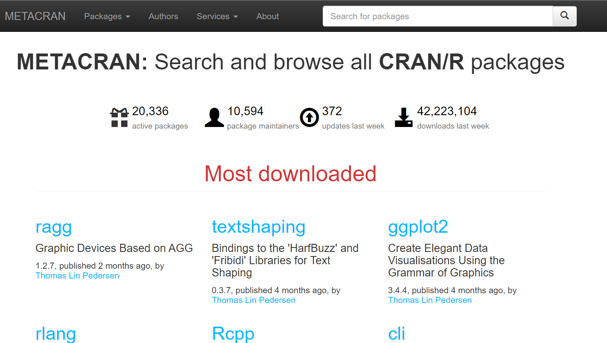
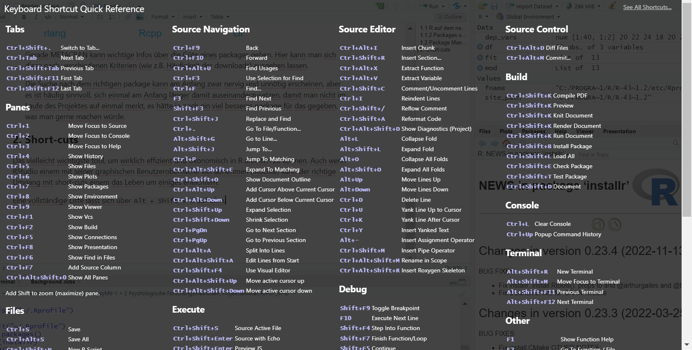

library(installr)
updateR()Ökonomisches Arbeiten in R
Dieses Skript soll euch dabei helfen, besser und effizienter in R zu arbeiten. Dabei geht es um:
short-cuts
passende package-Auswahl und deren Pflege
Schleifen
1. R auf dem neuesten Stand halten
Klingt trivial, kann aber große Vorteile mit sich bringen:
bug fixes in jeder neuen Version
bessere Stabilität und Performance (gerade relevant, wenn euer PC nicht der neueste ist)
Manche packages funktionieren nur mit den neuesten R Versionen
Um R zu updaten, empfiehlt sich das installr package. Mit diesem lassen sich auch packages in die neueste Version übertragen und andere Dinge (wie z.B. rtools) installieren.
RStudio könnt ihr einfach über Help –> Check for Updates innerhalb der IDE updaten.
1.2 Packages updaten
Auch hier lohnt es sich, auf dem aktuellen Stand zu bleiben. Nicht nur wird die Performance häufig verbessert, sondern es finden sich auch hier wichtige bug-fixes in den Updates.
update.packages()Alternativ auch möglich über den Reiter Packages -> Update. Hier empfiehlt es sich jedoch, vor einem größeren Projekt (z.B. der Masterarbeit) einmal alles zu updaten und dann während des Projekts keine Updates durchzuführen. So seid ihr auf der sicheren Seite, dass sich nichts wichtiges für euch ändert, während ihr dranarbeitet.
Wenn ihr dennoch automatisch alle packages updaten wollt, könnt ihr das tun, indem ihr update.packages(ask = FALSE) eurer .Rprofile file hinzufügt (wenn ihr nicht wisst, was das ist, dann lasst am besten die Finger davon).
1.3 Package Management
Wenn ihr an einem größeren R Projekt sitzt, werdet ihr vermutlich viele verschiedene packages benutzen. Um da nicht den Überblick zu verlieren, empfiehlt es sich, diese gesammelt am Start des Dokuments zu laden.
Bei der Auswahl der richtigen Packages, können die folgenden Seiten helfen:
-

Gerade METACRAN kann wichtige Infos über die Güte eines packages geben. Hier kann man sich diese nach verschiedenen Kriterien (wie z.B. Häufigkeit der downloads) ausgeben lassen.
Die Suche nach dem richtigen package kann am Anfang zwar nervig und unnötig erscheinen, aber es ist häufig sinnvoll, sich einmal am Anfang länger damit auseinanderzusetzen, damit man nicht im Laufe des Projektes auf einmal merkt, es hätte ja noch ein viel besseres package für das gegeben, was man gerne machen würde.
2. Effiziente Skriptbearbeitung
Das vielleicht wichtigste tool, um wirklich effizient und ökonomisch in R arbeiten zu können. Auch wenn RStudio einem mit seiner graphischen Benutzeroberfläche viel abnehmen (möchte) kann der richtige Umgang mit short-cuts einem das Leben um einiges erleichtern.
2.1 Auto-Vervollständigung
Tab und Enter auto-verollständigen den Code. So reicht es auch, “micr” einzugeben und Tab zu drücken, um microbenchmark entstehen zu lassen. Wenn R mehrere Möglichkeiten angibt, so kann man mit den Pfeiltasten die passende auswählen und dann ebenfalls mit Tab ausführen. Sollte R nicht automatisch Vorschläge geben, kann man sich diese mit Tab mit anzeigen lassen. Das ist besonders dann hilfreich, wenn man nur die ersten 1-2 Buchstaben angeben hat.
Diese Auswahl funktioniert auch mit Spalten in einem dataframe. In dem unteren Datensatz kann man so leicht, nachdem man das $ eingefügt hat, eine der vier Spalten mit den Pfeiltasten auswählen und mit Tab ausgeben lassen. Also: Tab ist euer bester Freund, gerade auch beim Bearbeiten von längeren Datensätzen.
head(iris) Sepal.Length Sepal.Width Petal.Length Petal.Width Species
1 5.1 3.5 1.4 0.2 setosa
2 4.9 3.0 1.4 0.2 setosa
3 4.7 3.2 1.3 0.2 setosa
4 4.6 3.1 1.5 0.2 setosa
5 5.0 3.6 1.4 0.2 setosa
6 5.4 3.9 1.7 0.4 setosa#iris$ Hier wird ein drip-down-Menü auftauchen, aus welchem ihr eine Spalte auswählen könnt
iris$Petal.Length [1] 1.4 1.4 1.3 1.5 1.4 1.7 1.4 1.5 1.4 1.5 1.5 1.6 1.4 1.1 1.2 1.5 1.3 1.4
[19] 1.7 1.5 1.7 1.5 1.0 1.7 1.9 1.6 1.6 1.5 1.4 1.6 1.6 1.5 1.5 1.4 1.5 1.2
[37] 1.3 1.4 1.3 1.5 1.3 1.3 1.3 1.6 1.9 1.4 1.6 1.4 1.5 1.4 4.7 4.5 4.9 4.0
[55] 4.6 4.5 4.7 3.3 4.6 3.9 3.5 4.2 4.0 4.7 3.6 4.4 4.5 4.1 4.5 3.9 4.8 4.0
[73] 4.9 4.7 4.3 4.4 4.8 5.0 4.5 3.5 3.8 3.7 3.9 5.1 4.5 4.5 4.7 4.4 4.1 4.0
[91] 4.4 4.6 4.0 3.3 4.2 4.2 4.2 4.3 3.0 4.1 6.0 5.1 5.9 5.6 5.8 6.6 4.5 6.3
[109] 5.8 6.1 5.1 5.3 5.5 5.0 5.1 5.3 5.5 6.7 6.9 5.0 5.7 4.9 6.7 4.9 5.7 6.0
[127] 4.8 4.9 5.6 5.8 6.1 6.4 5.6 5.1 5.6 6.1 5.6 5.5 4.8 5.4 5.6 5.1 5.1 5.9
[145] 5.7 5.2 5.0 5.2 5.4 5.12.2 Short-Cuts
Eine vollständige Liste lässt sich über Alt + Shift + K aufrufen:

Diese short-cuts sind wirklich nicht zu unterschätzen. Ihr könnt euch einiges an Zeit und Arbeit ersparen, indem ihr die wichtigsten lernt und beherrscht:
| Short-Cut | Funktion |
|---|---|
Strg + Z |
Rückgängig machen |
Strg + Enter |
Die Zeile ausführen / Den ausgewählten Code ausführen |
Strg + Alt + R |
Den kompletten Code ausführen |
Strg + Alt + B |
Führe den Code vom Anfang bis zur jetzigen Zeile aus |
Strg + Alt + E |
Führt den Code von jetzt bis zum Ende aus |
Alt + Shift + Pfeiltaste Hoch/Runter |
Die Zeile drüber oder drunter kopieren |
Strg + D |
Die Zeile löschen |
Strg + Pfeiltaste Links/Rechts |
Navigiert durch den Code Wort für Wort |
Das ist nur eine Auswahl. Schaut in der Liste der short-cuts nach, was ihr für eure Arbeiten gebrauchen könnte und versucht euch diese short-cuts anzueignen, wenn ihr schneller arbeiten wollt.
2.3 Kommentare
Kommentiert am besten alles, was ihr tut. Auch wenn es nervig ist, kann es einem im späteren Verlauf helfen, was man sich bei dem Code gedacht hat. Gerade, wenn ihr den Code mit anderen Personen teilt, um euch bspw. Hilfe einzuholen, kann dies sehr hilfreich sein. Vergleicht die beiden unteren Code-Blöcke um zu sehen, wie hilfreich Kommentare für ein schnelles Verständnis des Codes sind.
load("erstis.RData")
library(lavaan)
library(semPlot)
cfa.1.txt <- 'f =~ stim1 + stim4 + stim8 + stim11'
cfa.1.fit <- cfa(cfa.1.txt, data = erstis)
summary(cfa.1.fit, fit = TRUE)
cfa.2.txt <- 'f1 =~ stim1 + stim8
f2 =~ stim4 + stim11'
cfa.2.fit <- cfa(cfa.2.txt, data = erstis)
summary(cfa.2.fit, fit = TRUE)
vergleich <- anova(cfa.1.fit, cfa.2.fit)## Konfirmatorische Faktorenanalyse ##
# Datensatz laden
load("erstis.RData")
library(lavaan)
library(semPlot)
#Modelkonstruierung
cfa.1.txt <- 'f =~ stim1 + stim4 + stim8 + stim11'
#Modelschätzung
cfa.1.fit <- cfa(cfa.1.txt, data = erstis)
summary(cfa.1.fit, fit = TRUE)
#Alternative Modellkonstruierung
cfa.2.txt <- 'f1 =~ stim1 + stim8
f2 =~ stim4 + stim11'
#Modelschätzung
cfa.2.fit <- cfa(cfa.2.txt, data = erstis)
summary(cfa.2.fit, fit = TRUE)
#Modellvergleich
vergleich <- anova(cfa.1.fit, cfa.2.fit)3. Schleifen
Schleifen können ein hilfreiches tool in R sein, wenn sie richtig eingesetzt werden. Schauen wir uns dazu mal das untere Beispiel an:
n <- 1000000
method1 <- function(n){
x <- NULL
for (i in 1:n) {
x[i] <- sqrt(i)
}
}Hier wurde eine Funktion geschrieben, die einem die Wurzel jeder Zahl aus einem Datenvektor ausgeben soll. Allerdings ist diese Funktion nicht ganz optimal, da das in der Schleife wachsende Objekt “x” zu Beginn nicht vollständig initialisiert wurde. Besser wäre es so:
method2 <- function(n){
x <- numeric(n)
for (i in 1:n) {
x[i] <- sqrt(i)
}
}Diese beiden Funktionen lassen sich nun in Bezug auf ihre Durchführungsgeschwindigkeit vergleichen:
library(tidyverse)── Attaching core tidyverse packages ──────────────────────── tidyverse 2.0.0 ──
✔ dplyr 1.1.4 ✔ readr 2.1.5
✔ forcats 1.0.0 ✔ stringr 1.5.1
✔ ggplot2 3.4.4 ✔ tibble 3.2.1
✔ lubridate 1.9.3 ✔ tidyr 1.3.1
✔ purrr 1.0.2
── Conflicts ────────────────────────────────────────── tidyverse_conflicts() ──
✖ dplyr::filter() masks stats::filter()
✖ dplyr::lag() masks stats::lag()
ℹ Use the conflicted package (<http://conflicted.r-lib.org/>) to force all conflicts to become errorslibrary(microbenchmark)
vergleich <- microbenchmark(times = 100, unit = "s",
method1(n), method2(n))
autoplot(vergleich)
Wie man sehen kann, ist die zweite Methode durchaus um einiges schneller. Es geht aber noch einfacher; man kann sich die ganze Schleife sparen, indem man einfach vektorisiert:
method3 <- function(n){
x <- sqrt(1:n)
}Der Vergleich aller drei Methoden zeigt hier, dass das Vektorisieren die schnellste und effizienteste Methode ist:
vergleich <- microbenchmark(times = 100, unit = "s",
method1(n), method2(n), method3(n))
autoplot(vergleich)